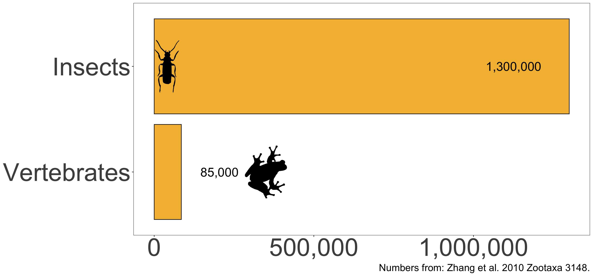
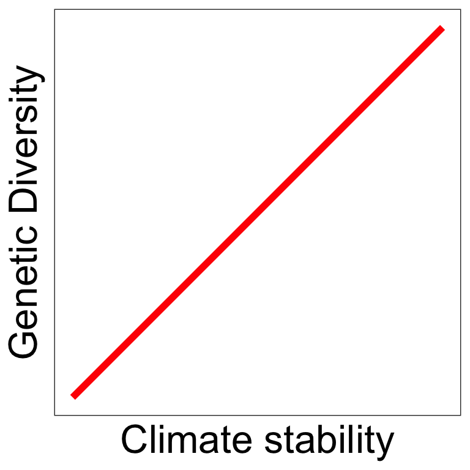
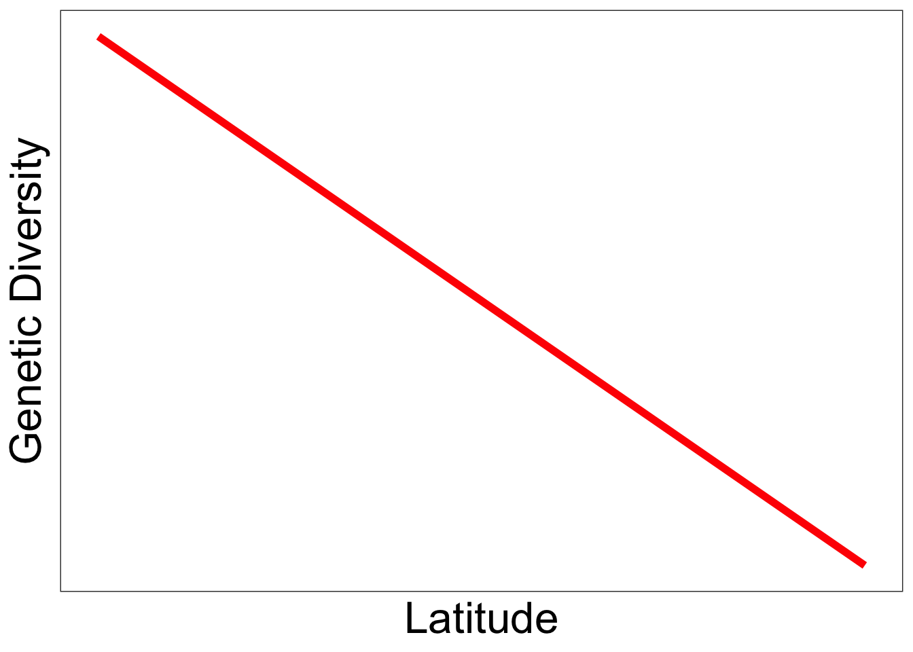

# Audience: Jenna and first year grad student
# Time: 45-50 minutes
# Take-away message: the impact of environmental change on genetic diversity is complex and can be studied across spatial and taxonomic scales
#
# General Outline:
# - Introduction (3 minutes)
# - Chapter one (15 minutes): Global determinants of insect mitochondrial genetic diversity
# - Take-away message: The global distribution of insect genetic diversity peaks in the subtropics and is driven by seasonally warm temperatures and climate stability
# - Chapter two (15 minutes): Demographic responses to past climate change in Brazilian Enyalius lizards using spatially-explicit coalescent modeling
# - Take-away message: Linking SDMs with spatially-explicit coalescent models can be used to test hypotheses about the ecology of species and the impact of past climate change on genetic diversity
# - Chapter three (10 minutes): *spaceprime*: a Python package to facilitate spatially-explicit coalescent models in *msprime*
# - Take-away message: *spaceprime* makes complex eco-evolutionary models a little easier
# - Conclusions (3 minutes)
# - Bibliography
# - Acknowledgements (2 minutes)The influence of environmental change on genetic diversity across spatial and taxonomic scales
# load libraries
library(tidyverse)── Attaching core tidyverse packages ──────────────────────── tidyverse 2.0.0 ──
✔ dplyr 1.1.4 ✔ readr 2.1.4
✔ forcats 1.0.0 ✔ stringr 1.5.1
✔ ggplot2 3.5.1 ✔ tibble 3.2.1
✔ lubridate 1.9.3 ✔ tidyr 1.3.1
✔ purrr 1.0.2
── Conflicts ────────────────────────────────────────── tidyverse_conflicts() ──
✖ dplyr::filter() masks stats::filter()
✖ dplyr::lag() masks stats::lag()
ℹ Use the conflicted package (<http://conflicted.r-lib.org/>) to force all conflicts to become errorslibrary(gganimate)
library(smoothr)
Attaching package: 'smoothr'
The following object is masked from 'package:stats':
smoothlibrary(sf)Linking to GEOS 3.10.2, GDAL 3.4.2, PROJ 8.2.1; sf_use_s2() is TRUElibrary(rphylopic)You are using rphylopic v.1.4.0. Please remember to credit PhyloPic contributors (hint: `get_attribution()`) and cite rphylopic in your work (hint: `citation("rphylopic")`).library(rnaturalearth)
library(ggtext)
# set the theme
theme_set(theme_bw())
# theme_update isn't working, so I'm setting the text sizes as variables
axis_title_size <- 60
axis_text_size <- 45
caption_size <- 18The Earth is constantly changing


Populations shrink or expand…
# Read and transform the localities data
locs <- read_sf("data/distincta_localities_ex.geojson") %>%
st_transform(5880)
# Draw minimum convex hull around localities
mch <- st_convex_hull(st_union(locs))
# Smooth the polygon
mch_smooth <- smooth(mch, method = "chaikin")
# Shrink the polygon using sf
small_polys <- map(seq(1, 150, 5), \(x) st_buffer(mch_smooth, dist = -units::set_units(x, "km")) %>%
smooth(method = "chaikin"))
poly_maps <- map(small_polys, \(x) ggplot() +
geom_sf(data = x, fill = "darkgreen", color = "black") +
theme_void())
# convert to a gif
images <- map(poly_maps, function(plot) {
# Save each plot to a temporary file
plot_file <- tempfile(fileext = ".png")
ggsave(plot_file, plot, width = 10, height = 8)
# Read the image
magick::image_read(plot_file)
})
# Create an animated GIF
animated_gif <- magick::image_animate(magick::image_join(images), fps = 10)
magick::image_write(animated_gif, "images/popsize_change.gif")Fragment and reconnect…
# Read and transform the localities data
locs <- read_sf("data/distincta_localities_ex.geojson") %>%
st_transform(5880)
locs_north <- locs %>%
filter(latitude > -25.4)
locs_south <- locs %>%
filter(latitude <= -25.4)
# Draw minimum convex hull around localities
mch_north <- st_convex_hull(st_union(locs_north))
mch_south <- st_convex_hull(st_union(locs_south))
# Smooth the polygon
mch_north_smooth <- smooth(mch_north, method = "chaikin")
mch_south_smooth <- smooth(mch_south, method = "chaikin")
# Shrink the polygon using sf
small_polys_north <- map(seq(1, 100, 3), \(x) st_buffer(mch_north_smooth, dist = -units::set_units(x, "km")) %>%
smooth(method = "chaikin"))
small_polys_south <- map(seq(1, 100, 3), \(x) st_buffer(mch_south_smooth, dist = -units::set_units(x, "km")) %>%
smooth(method = "chaikin"))
poly_maps_total <- map2(small_polys_north, small_polys_south, \(x, y) ggplot() +
geom_sf(data = x, fill = "darkgreen", color = "black") +
geom_sf(data = y, fill = "orange", color = "black") +
theme_void())
# convert to a gif
images <- map(poly_maps_total, function(plot) {
# Save each plot to a temporary file
plot_file <- tempfile(fileext = ".png")
ggsave(plot_file, plot, width = 10, height = 8)
# Read the image
magick::image_read(plot_file)
})
# Create an animated GIF
animated_gif <- magick::image_animate(magick::image_join(images), fps = 5)
magick::image_write(animated_gif, "images/frag_reconnect.gif")
Adapt or go extinct
Genetic diversity contains signatures of that change
Genetic diversity is the variation in DNA sequences within a population. It records the history of a population’s past, including changes in population size, connectivity, and adaptation to the environment. In this visualization, we see each individual, represented as circles, in a population with their genealogy traced back in time. The length of those lineages represent how much genetic diversity has accumulated over time. When I play the video, you’ll see the population change over time, with individuals being born and dying. The colors represent different genetic lineages. This is a simplified example, but it illustrates how genetic diversity can change over time.
Genetic diversity can tell stories about
In general, the higher the genetic diversity the better, as it can provide a population with the raw material to adapt to changing environments.
Ectotherms are linked to their environments


They may be sensitive to fluctuations in their environment over time.
With the climate shifting rapidly, it’s important to understand how these changes are impacting the genetic diversity of species and communities.
I investigate global and regional patterns of genetic diversity in two groups of ectotherms, insects and lizards, to understand the relationship between environmental change and genetic diversity, from populations to assemblages.
My questions
1. What is the relationship between assemblage-wide genetic diversity and environmental change in insects?
2. What can genetic diversity convey about the processes underlying species responses to environmental change?
3. How can I make integrative modeling of species responses to environmental change more accessible?
Chapter 1: Global determinants of insect mitochondrial genetic diversity
A global perspective is necessary
A global perspective is necessary for understanding broad biodiversity patterns and at-risk regions
Insects comprise over 93% of the planet’s described animal diversity
# barplot of the number of described insect species versus the number of estimated vertebrate species
insect_data <- tribble(
~group, ~species,
"Insects", 1.3e6,
"Vertebrates", 85000
) %>%
mutate(group = fct_relevel(group, "Vertebrates", "Insects"))
ggplot(insect_data, aes(x = group, y = species)) +
geom_bar(stat = "identity", fill = "#f5bc3f", color = "black") +
theme_bw() +
theme(legend.position = "none") +
# add labels with the number of species on each bar, with a different hjust for each species
geom_text(aes(label = scales::comma(species), y = species, hjust = ifelse(group == "Insects", 1.5, -0.5)), size = 8) +
add_phylopic(name = "Cantharis rustica", x = 2, y = 40000, ysize = 0.5) +
add_phylopic(name = "Sarcohyla bistincta", x = 1, y = 350000, ysize = 0.5) +
labs(caption = "Numbers from: Zhang et al. 2010 Zootaxa 3148.") +
coord_flip() +
scale_y_continuous(labels = scales::comma) +
theme(
panel.grid = element_blank(),
axis.text = element_text(size = axis_text_size),
axis.title = element_blank(),
plot.caption = element_text(size = caption_size)
)Warning: You've used the `name` aesthetic/argument. You may want to use
`verbose = TRUE` to get attribution information for the silhouette(s).
Warning: You've used the `name` aesthetic/argument. You may want to use
`verbose = TRUE` to get attribution information for the silhouette(s).
Estimated number of insect species is even higher: 5.5 million! Stork 2018. Ann. Rev. Entomol. 10.1146/annurev-ento-020117-043348
Global biodiversity patterns remain undocumented for most insects
- Scientists have relied on species richness or species diversity
- Describing and cataloging the world’s insect diversity is a monumental task
- What do we do?
Genetic diversity is a promising biodiversity metric
- It does not rely on species identity for calculation
- It is robust to certain sampling biases
- macrogenetics is an emerging field
Predictions follow those from vertebrates
Latitudinal diversity gradient
# generate data with a negative correlation. the x-axis should start at zero
set.seed(42)
lat <- seq(0, 90, length.out = 100)
div <- 100 - lat + rnorm(100, 0, 10)
lat_plot <- ggplot(data = tibble(lat = lat, div = div), aes(x = lat, y = div)) +
geom_smooth(method = "lm", se = FALSE, color = "red", linewidth = 2) +
theme_bw() +
labs(x = "Latitude", y = "Genetic Diversity") +
theme(
axis.title = element_text(size = axis_title_size * .4),
axis.text = element_blank(),
axis.ticks = element_blank(),
panel.grid = element_blank()
)
lat_plot`geom_smooth()` using formula = 'y ~ x'
Human disturbance
ggplot(data = tibble(lat = lat, div = div), aes(x = lat, y = div)) +
geom_smooth(method = "lm", se = FALSE, color = "red", linewidth = 2) +
theme_bw() +
labs(x = "Human disturbance", y = "Genetic Diversity") +
theme(
axis.title = element_text(size = axis_title_size * .4),
axis.text = element_blank(),
axis.ticks = element_blank(),
panel.grid = element_blank()
)`geom_smooth()` using formula = 'y ~ x'
Climate stability
ggplot(data = tibble(lat = lat, div = -div), aes(x = lat, y = div)) +
geom_smooth(method = "lm", se = FALSE, color = "red", linewidth = 2) +
theme_bw() +
labs(x = "Climate stability", y = "Genetic Diversity") +
theme(
axis.title = element_text(size = axis_title_size * .4),
axis.text = element_blank(),
axis.ticks = element_blank(),
panel.grid = element_blank()
)`geom_smooth()` using formula = 'y ~ x'
I compiled the largest animal macrogenetic dataset to date
- 2,415,415 mtDNA sequences
- 98,417 operational taxonomic units (OTUs) 3
For the purposes of this talk, we can think of OTUs as a proxy for species, although there are important differences that matter depending on the context of the study.
I compiled the largest animal macrogenetic dataset to date
crs_behr <- "+proj=cea +lon_0=0 +lat_ts=30 +x_0=0 +y_0=0 +datum=WGS84 +ellps=WGS84 +units=m +no_defs"
base_map <- ne_coastline(scale = "medium", returnclass = "sf") %>%
st_transform(crs_behr)
# read in the data
sample_df <- read_sf("data/full_sf.geojson", crs = crs_behr) %>%
filter(num_otu >= 100) Warning: st_crs<- : replacing crs does not reproject data; use st_transform for
thatmap_plot <- ggplot() +
geom_sf(data = base_map, fill = "gray80", color = "gray40") +
geom_sf(data = sample_df, aes(fill = num_ind, color = num_ind)) +
scale_fill_viridis_c(option = "plasma", na.value = "transparent", trans="log10") +
scale_color_viridis_c(option = "plasma", na.value = "transparent", trans = "log10", guide = FALSE) +
labs(
fill = "",
title = "*Sampling is most dense in the northern hemisphere*") +
coord_sf(expand = FALSE) +
theme_void() +
theme(
legend.position = "bottom",
# legend.position = "inside",
# legend.position.inside = c(0.2, 0.345),
legend.text = element_text(size = 6),
legend.key.size = unit(0.5, "cm"),
plot.title = element_markdown(size = 10)
)
# save to images
ggsave("images/sample_map.svg", map_plot, width=1400, height=900, units="px")Warning: The `guide` argument in `scale_*()` cannot be `FALSE`. This was deprecated in
ggplot2 3.3.4.
ℹ Please use "none" instead.Warning in do_once((if (is_R_CMD_check()) stop else warning)("The function
xfun::isFALSE() will be deprecated in the future. Please ", : The function
xfun::isFALSE() will be deprecated in the future. Please consider using
base::isFALSE(x) or identical(x, FALSE) instead.
Grid cells had a 193 km by 193 km resolution and we summarized the genetic diversity for all OTUs (that is, species) in each sampled grid cell. I only retained grid cells that had at least 100 individuals for the final analysis, although I explored multiple resolutions and thresholds and ensured that results were robust across these choices.
Summarizing genetic diversity
For each OTU, I calculated the mean number of pairwise differences between sequences

Genetic diversity mean (GDM) = the average genetic diversity among all OTUs
Genetic diversity evenness (GDE) = the evenness of the shape of the genetic diversity distribution

Many pairwise differences equals higher genetic diversity for that OTU. But then we summarize them across all OTUs in a grid cell to get a measure of genetic diversity for that grid cell’s insect assemblage.
GDE/GDM ~ latitude + climate + climate stability + human influence + habitat + topography
Global maps of insect genetic diversity
mess_gde_sf <- read_sf("data/mess_gde.geojson") %>%
st_set_crs(crs_behr)Warning: st_crs<- : replacing crs does not reproject data; use st_transform for
thatgde_df <- read_rds("data/full_preds_sf_gde.rds") %>%
pluck("min_otu_100") %>%
st_set_crs(crs_behr) %>%
st_join(mess_gde_sf %>%
select(mess_binary), st_equals) %>%
# mask out the values in non-analogous climate
mutate(
across(where(is.double), ~if_else(mess_binary == "non_analogous", NA_real_, .x), .names = "mask_{.col}")
)
map_plot <- ggplot() +
geom_sf(data = gde_df, aes(fill = mask_.pred, color = mask_.pred)) +
geom_sf(data = base_map, fill = "transparent", color = "black") +
scale_fill_viridis_c(option = "rocket", na.value = "gray80") +
scale_color_viridis_c(option = "rocket", na.value = "gray80", guide = "none") +
labs(
fill = "",
title = "*Global distribution of predicted genetic diversity evenness*") +
coord_sf(expand = FALSE) +
theme_void() +
theme(
legend.position = "bottom",
# legend.position = "inside",
# legend.position.inside = c(0.2, 0.345),
legend.text = element_text(size = 6),
legend.key.size = unit(0.5, "cm"),
plot.title = element_markdown(size = 10)
)
# save to images
ggsave("images/gde_map.svg", map_plot, width=1400, height=900, units="px")
map_sf_gde_hs <- gde_df %>%
arrange(desc(mask_.pred)) %>%
slice_head(prop = 0.1)
gde_hs_map <- ggplot() +
geom_sf(data = base_map, fill = "transparent") +
geom_sf(data = map_sf_gde_hs, fill = "red", color = "red") +
labs(
title = "*Hotspots are mostly in warm, arid, environments*") +
coord_sf(expand = FALSE) +
theme_void() +
theme(
plot.title = element_markdown(size = 10)
)
ggsave("images/gde_hs_map.svg", gde_hs_map, width=1400, height=900, units="px")
GDE peaks in the subtropics
lat_plot`geom_smooth()` using formula = 'y ~ x'